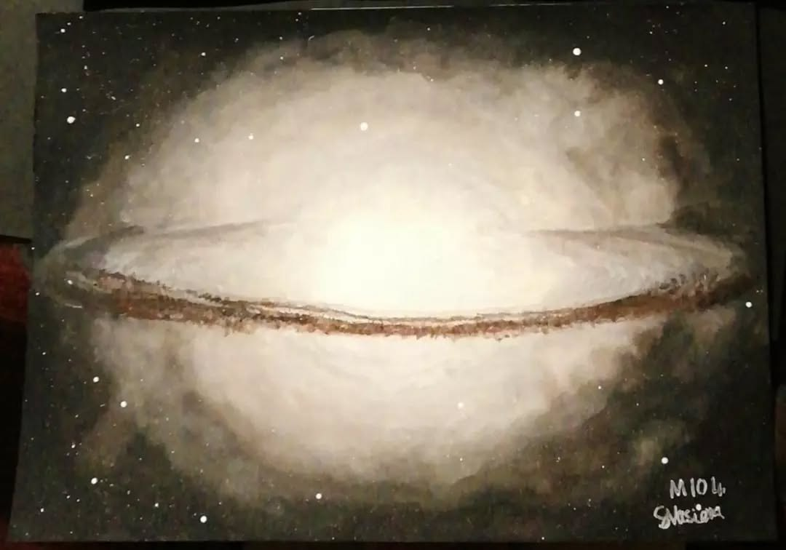

M104, the Sombrero Galaxy
I think this was the first deep-sky object I ever painted. This is an A5 painting of M104, the Sombrero Galaxy, which I gave to the incredible (!!!) @emma89harris for her birthday earlier this year.

I think this was the first deep-sky object I ever painted. This is an A5 painting of M104, the Sombrero Galaxy, which I gave to the incredible (!!!) @emma89harris for her birthday earlier this year.